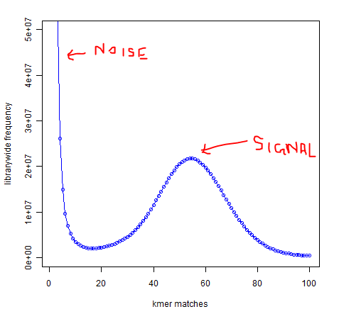
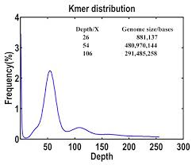

相比于动物，重复序列聚集在一起，更难以拼接（需要更长的读码）
比动物重复序列多
关键词：Genome Size Estimation; Kmer
假如有一批二代或三代基因组测序数据，计算基因组覆盖深度：
base_coverage_depth = Total_base_num/genome_size=(read_num * read_length)/genome_size
同样，Kmer覆盖深度，即Kmer频率曲线中的峰值，可计算：
Kmer_coverage_depth= Total_kmer_num/genome_size = read_num * (read_length - kmer_size +
1)/genome_size
基因组覆盖深度和Kmer深度的关系：
Kmer_coverage_depth = base_coverage_depth * (read_length - Kmer_size + 1)/read_length
如果基因组深度为50X，read_length = 100,Kmer_size = 21,则Kmer深度：
Kmer_coverage_depth = 50 * （100 -21 + 1）/100，刚好是Kmer分布图中的peak。
kmer峰值图可以看到基因组覆盖度
多态性（polymorphism）：由于多倍体物种的杂合性，即同源染色体上的相同位置的碱基差异，SNV等，同导致Kmer分布图出现亚峰（sub-peak）。如果主峰是50，多态性导致Kmer频率减半，亚峰则会在100左右。
#对Kmer计数，使用fastq/fasta文件均可
# -s是预估哈希表的大小，即G+G*c*e*k。G是Genome Size；c是coverage；e是测序错误率（illumina为1%）；k是kmer大小
# 输入只能的未压缩的文件，如若输入压缩文件，会报错：terminate called after throwing an instance of 'std::runtime_error'
$ jellyfish count -m 16 -s 100M -t 24 -o mer_counts -c 7 input.fastq
$ jellyfish histo -f mer_counts >mer_counts.histo$ jellyplot.pl mer_counts.histo
# use find_valleys.pl to help pinpoint the actual peak
find_valleys.pl mer_counts.histo
# estimate the size and coverage
estimate_genome_size.pl --kmer=31 --peak=42 --fastq=reads1.fastq.gz reads2.fastq.gz# 用90G和全部数据测试
$ KmerFreq_AR -k 17 -t 8 -q 33 -p soapec_90g -b 90000000000 reads.list >KmerFreq_90g.log 2>KmerFreq_90g.error
$ KmerFreq_AR -k 17 -t 8 -q 33 -p soapec_all reads.list >KmerFreq_all.log 2>KmerFreq_all.error
# 评估结果在soapec_90g.genome_estimate，soapec_all.genome_estimate文件中可通过设置kmer最小值（-l），最大值(-k)及间隔kmer大小（-s）去设置多个kmer，结果可生成多个kmer评估频谱及可视化pdf文件
$ kmergenie reads.list --diploid -k 121 -l 19 -s 6 -o histograms.hiseq >histograms.hiseq.log 2>histograms.hiseq.err我这段代码测试了Kmer 19之121，但是结果是19还准，25还行，之后的都不靠谱了。随着Kmer值增大，峰值会左移，再逐渐没有峰值。kmer还是17-25之间更靠谱。
杂合峰正好位于主峰的1/2处。
比主峰更大的位置代表拷贝数大于1。
小于主峰1/2处的低峰是外源DNA污染。有时是实验污染，有时是内共生的细菌、真菌或者微小昆虫体表面无法去除的杂菌（总之就是去不掉）等。
将共生的细菌等测序得出，和全部测序结果进行mapping。根据mapping结果进行分析。
可以根据杂质和目标生物的基因组情况可以分析互作。
去除之后可以重新进行K-mer来判断杂质是否完全过滤干净。有时候会发现低峰降低，但是没去干净。此时只能带着杂质继续组装。然后在去除（方法没记上），然后第三次K-mer。
有时会出现无峰现象，如果不是污染或者实验问题，则说明测序数据不足。